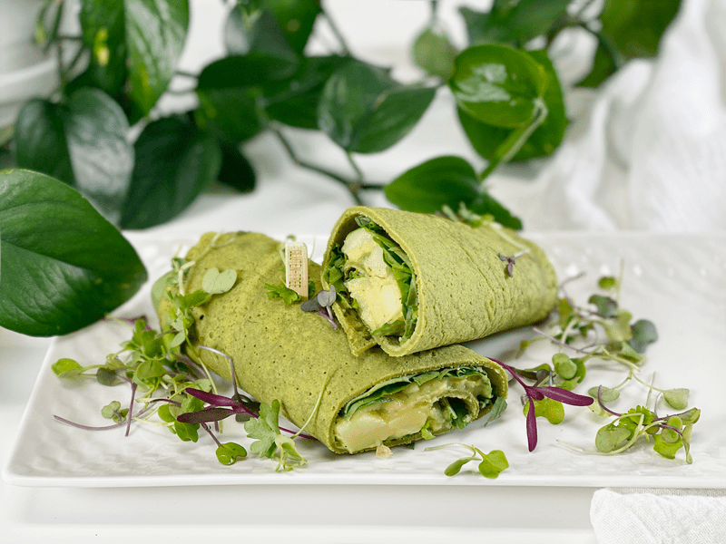
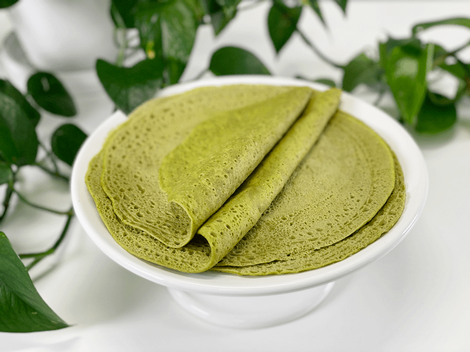
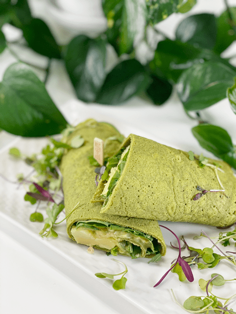
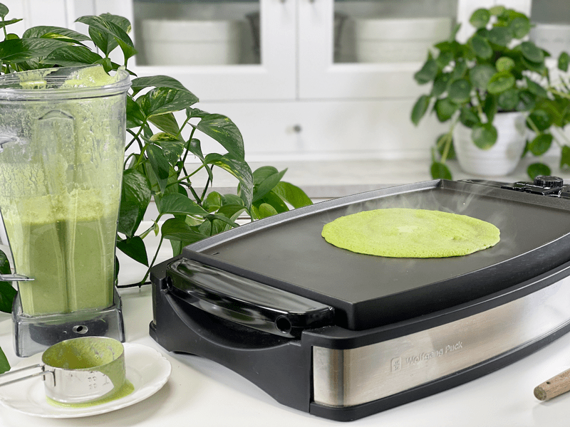
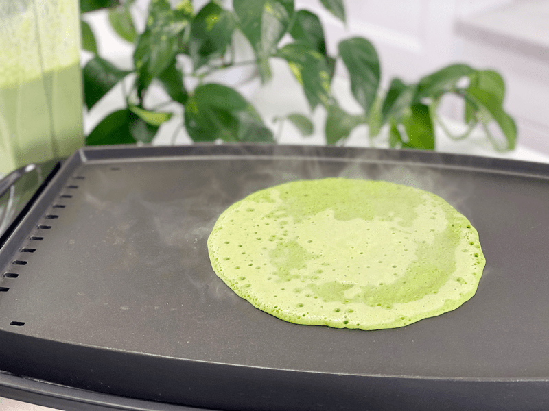
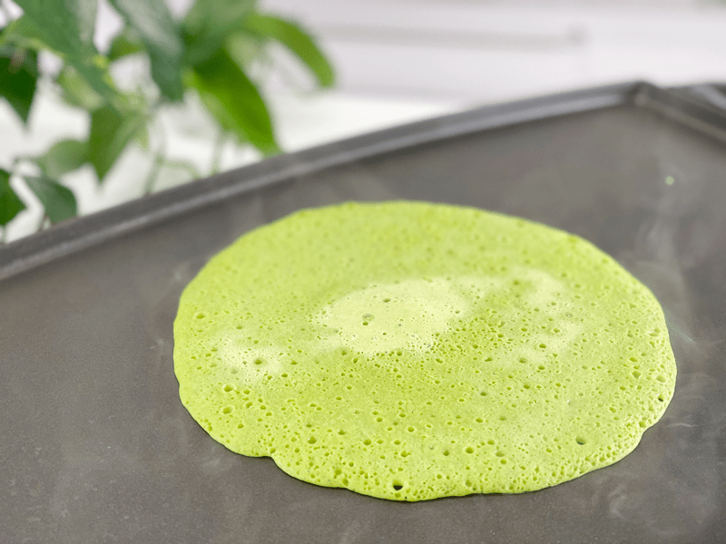
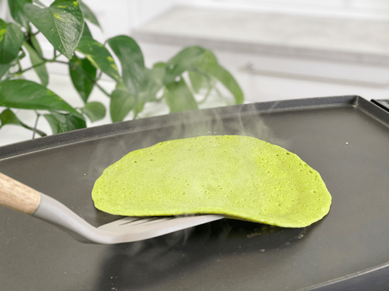
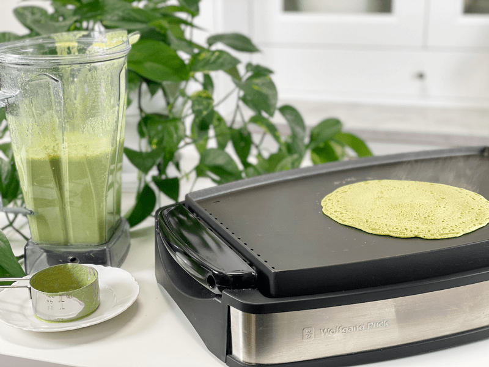
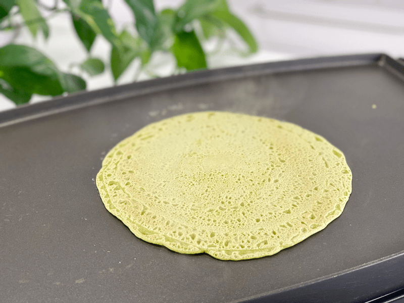

Spinach Buckwheat Wraps | Cooked | Oil-Free
These wraps are surprisingly easy to make and require only 4 ingredients (water and salt included!) They are gluten-free, nut-free, oil-free, durable, can handle any wrap-job you can throw at them, nutritious, and tastes= really good. They are very low on the glycemic index, which means that the carbohydrate content is absorbed slowly into the bloodstream, providing your body with a steady flow of energy.

As the title indicates, I used spinach in the recipe. I never pass up an opportunity to sneak veggies into a recipe. I enjoy spinach, but it’s not my favorite vegetable to eat all by itself. Over the years I have increased my love for it by discovering baby spinach. As the name implies, it is standard spinach leaves that are harvested when they are young and tender. It is typically harvested when the leaves are approximately 1 to 1 1/2 inches in diameter, which gives it a delicate flavor and texture. I find that it has almost a sweet taste in comparison with mature, fully formed spinach leaves.
If you are wondering if these wraps taste like spinach, the answer is… sorta, maybe, a tiny bit — shrugs. On their own, they do have a very light and green taste but when you load it full of other veggies, hummus, vegan cheese, etc. you won’t detect it one bit. Surprisingly I found that I really enjoyed the wraps rolled up and eaten as-is. In fact, I spent over nine hours mowing the fields and these wraps were my go-to snack as I headed out into the fields.

Tips and Techniques
- Be sure to start off with RAW buckwheat. How do you know? The packaging should tell you, BUT if not, look for the tan kernels. If they are brown, they have been toasted, otherwise known as kasha.
- Presoak the buckwheat anywhere between 2-8 hours. If you run out of time and can’t make the wraps that day, drain the buckwheat, add fresh water, and keep in the fridge until the next day. Soaking the buckwheat kernels will cause them to swell and will produce a creamy texture when blended. To learn more about the soaking process and the health benefits of doing so, click (here).
P.S. The filling in the wraps photographed here is my oil-free, fat-free, nut-free Chunky Potato Salad. That may sound like an odd filling for a sandwich wrap, but trust me, it was perfect. I also layered in some fresh baby arugula and spinach greens. Enjoy! blessings, amie sue

Ingredients
Yields 9 wraps (1/2 cup batter each)
- 1 1/2 cups raw buckwheat, soaked
- 2 cups water
- 3 cups packed fresh baby spinach
- 1 1/2 tsp sea salt
Preparation
Soaking the Buckwheat
- Place the buckwheat in a glass bowl with 3 cups of water, along with 2 Tbsp of raw apple cider vinegar or lemon juice.
- Let it soak for 2-8 hours on the countertop.
- When ready to use, drain, and rinse the buckwheat thoroughly.
Assembly and Cooking
- Place the spinach, water, and salt in the blender, and blend on high until the mixture is smooth.
- Add the soaked/drained/rinsed buckwheat and blend it until smooth and creamy.
- Preheat a nonstick pan or griddle to medium-high. If using a pancake griddle, set to 400 degrees (F).
- Pour 1/2 cup of batter into the center of the pan, using the bottom of the measuring cup to spread the batter to about 8-9″. Use a light hand and don’t drag the bottom of the measuring cup on the cooking surface as this will gum up the batter.
- Make sure that you spread the batter evenly on the pan so it cooks evenly. Based on the thickness or thinness of the wrap, the cooking time can vary.
- Cook the first side for approximately 2 minutes.
- While cooking on the first side, it goes from lime green to a darker green when ready to flip. This process takes 2 minutes.
- The edges also start to lift slightly when it nears flipping time.
- Cook on the second side for 2 minutes.
- Once fully cooked, the first side remains a vibrant green, whereas the second side is a lighter pale green.
- Once the wraps are done cooking, transfer them to a cooling rack, covering them with a clean kitchen towel.
- After they have fully cooled, store them in an airtight container with parchment paper in between each wrap to prevent sticking.
- Store in the fridge for 5 or more days.
-

-
Pour 1/2 cup of batter onto the preheated pan and gently spread it out to roughly 9″.
-

-
As it cooks, it will steam.
-

-
It also turns color from a pale green to a brighter green.
-

-
Once the color has totally converted to the brighter green, slide a spatula around the edges. If the spatula moves freely under it, flip it over to cook the other side.
-

-
It is normal for small holes to form in the wrap dough as it cooks.
-

-
And there you have it… a lacy-looking wrap!
© AmieSue.com